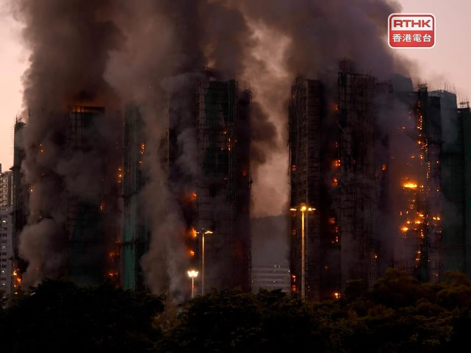

世界苦茶11月27日新闻 | 31条 | 香港火灾已造成44人遇难

香港火灾已造成44人遇难 | 马克龙将访华 | 中日外交风波降温 | 台湾增加400亿美元国防预算 | 欧洲议会支持将社交媒体年龄降至16岁 | 特朗普不会在乔治亚州因为介选被追责
苦茶数据
美元兑人民币：7.07（昨日7.07，前日7.09）
美元兑日元：156.09（昨日156.10，前日156.82）
上证指数：3885（昨日3879，前日3880)
标普500指数：6812（昨日6765，前日6705）
比特币：91585（昨日87519，前日88048）
布伦特原油：62.83（昨日62.72，前日63.09）
中国新闻
**• 香港宏福苑大火至今造成44死、56伤，另有279人失联。 **
警方凌晨拘捕3人涉嫌误杀，分别是负责屋苑大厦维修的工程公司的两名董事和一名工程顾问，目前仍未扣查。警方初步调查，认为有理由相信是负责人严重疏忽引致此次意外，并引致火势迅速蔓延。新界北总区刑事总部高级警司钟丽诒表示，除怀疑建筑物外墙安装保护网、保护膜、防水帆布及塑胶布等不符合防火标准，警方亦发现一幢未被波及的大厦的每层电梯大堂的窗外被发泡胶包封。发泡胶是易燃物品，有可能加速火势蔓延，不排除是此次大火迅速蔓延的原因。截至27日4时许，火场传出巨响，高层火势依然猛烈，有竹棚不断从高处堕下。消防处预计，中午至黄昏时候救援才能抵达部分大厦天台。
• 中国政府免去国家保密局局长与副局长职务。
11月26日，中国国务院发布任免国家工作人员通知。通知写到：任命沈阳为国家民族事务委员会副主任；任命秦禾为国家宗教事务局副局长；任命仇保利为国家移民管理局副局长；任命宋功德为国家保密局局长；任命刘昌胜为重庆大学校长。免去李兆宗的国家保密局局长职务；免去史英立的国家保密局副局长职务。中央保密办和国家保密局，一个机构两块牌子，是主管中国党和国家涉密资料的密级审定、规章制度建立、落实、督办、失密案件的查处、行政处罚等工作的中共中央直属机关的下属机构、国务院部委管理的国家局，现由中共中央办公厅管理。
• 中国民间对印度负面情绪升温 学者预计短期内难扭转。
中印恢复直航、印度恢复对中国公民发放旅游签证之际，中国民间对印度的负面情绪因近期一系列事件显着升温。受访学者指这种情绪累积已久，在两国外交关系尚未出现实质性改善的情况下，民间层面的观感短期内也难以扭转。中国网民星期二发帖称，在杭州机场遇到“轮椅印度人”，本可以行走却使用轮椅。其中一张配图显示一名印度老妇在候机时坐着轮椅，另一图则看到这名老妇在机舱内呈站立姿势。帖文发布后，迅速引发中国网民批评，认为不应浪费社会资源，认为印度人“习惯占便宜”，在世界其他机场也有类似行为，应“严审印度人签证”等。过去一个月，中国已出现多则与印度人相关的负面消息。
• 近三分之一BNO移英港人或受英国移民新政影响。
调查显示，近三分之一通过英国国民签证计划移居英国的香港人是退休人士、家庭主妇或学生，他们很可能会受到英国政府拟议的移民收入门槛影响。据《南华早报》报道，这项由总部位于伦敦的脸书群组“萨顿香港人”进行的调查还发现，16%的BNO签证持有者仅完成中学教育，可能难以达到官方新提出的、更严格的英语语言要求。该调查在10月至11月期间访问了英国各地690名通过BNO途径移英的香港人。“我们希望信守承诺。”伦敦萨顿中央区市议员兼“萨顿香港人”创始人蔡嘉源受访时说：“BNO签证是基于当时的承诺发出的一项邀请增加新的条件或修改要求是不公平的。
• 法国总统埃马纽埃尔·马克龙将于下周访华期间会见习近平。
法国总统埃马纽埃尔·马克龙将于下周访问中国，并会见中国国家主席习近平，爱丽舍宫周三在一份声明中表示。声明称，此次为期三天的访问计划于12月3日开始，将在北京和成都两地停留。“在此期间，将讨论涉及法中战略伙伴关系的重大问题，以及若干重大国际事务和旨在应对我们这个时代全球挑战的合作领域，”声明称。此次国事访问正值欧洲在努力应对美国总统唐纳德·特朗普提出的乌克兰和平计划之际。
• 随着争端升级，北京要求日本就一个中国原则作出明确表态。
随着外交争端升级，北京要求日本就一个中国原则作出明确表态。中国外交部和官方媒体加紧对东京施压，两国围绕高市早苗关于台湾的言论继续交锋。周二，日本内阁就议员询问高市言论的问题采纳书面答复，称这些言论“并未改变政府一贯立场”。对此，中国外交部发言人毛宁周三表示，这样的说法“远远不够”。“仅以抽象概念为借口粉饰细节、回避实质问题以图欺骗他人，是行不通的。” 高市早苗在11月7日表示，一旦台湾海峡发生冲突，日本可能会派遣自卫队。这是日本在任领导人首次如此明确地谈及在台湾突发事态中可能的应对方式。
印太新闻
• 300年一遇的降雨袭击泰国城市，洪水肆虐东南亚。
泰国部分地区正遭遇创纪录洪灾，已造成至少33人死亡，官员动用军舰和直升机支援救援行动。过去一周，暴雨波及该国南部10个省份，毗邻马来西亚的商业中心合艾单日降雨量达335毫米，创300年以来之最。照片显示该市车辆和房屋被淹，绝望的居民在屋顶等待救援。连绵不断的降雨也重创邻国。越南一周内死亡人数上升至98人，马来西亚已有超过1.9万人被迫撤离家园。印尼国家搜救署表示，北苏门答腊至少有19人死亡，另有至少7人被山体滑坡掩埋。泰国已有超过200万人受洪灾影响，但仅约1.3万人被转移到收容所。
• 美国议员敦促特朗普谴责中国支持的缅甸“虚假”选举。
美国议员敦促特朗普谴责缅甸下月由中国支持的“虚假”选举 此举发生在美国政府以选举为证据，称局势正在改善并据此停止对缅甸国民在美的法律保护后，华盛顿一群跨党派的美国议员正在敦促唐纳德·特朗普政府拒绝缅甸下月的“虚假”选举——就在政府援引该国选举进展为由，取消缅甸国民在美国的法律保护数日之后。“缅甸定于12月举行的选举正在被证明为一场骗局，”众议员布莱恩·马斯特和格雷戈里·米克斯以及参议员吉姆·里施和珍妮·沙欣周三表示，他们在声明中使用了这个饱受战争蹂躏国家的旧称。
• 赖清德宣布拨400亿美元建设先进防卫体系。
台湾总统赖清德星期三指出，北京当局以2027年完成武统台湾为目标，企图把“民主台湾”变成“中国台湾”，故未来八年将投入400亿美元国防特别预算，建设“台湾之盾”等先进防卫作战体系。赖清德星期三在总统府召开“守护民主台湾国安行动方案”国安高层会议，于会后记者会作上述表示。美国在台协会处长谷立言在脸书发文表示欢迎。他说：“今天宣布的消息，是朝向借由强化吓阻以维持台海的和平稳定，所迈出的一大步”。中国大陆外交部发言人毛宁于例行记者会上说，中方反对美台官方往来和军事联系的立场是一贯的。台湾民进党当局“以武拒统”“以武谋独”不可能得逞。
• 日本研议放弃非核三原则 掀国内外安全疑虑。
日本自民党预计在国安战略检讨中研议是否废除日本长期奉行的“非核三原则”，以因应日益升温的区域紧张情势。相关讨论引发国内强烈反弹声浪，外国学者警告日本若拥有自主核武，恐推升区域军备竞赛。随着东北亚的安全挑战日益升温，日本执政党自民党将针对国家安全政策展开讨论，其中包含研议是否废除日本长期奉行的“不拥有、不制造、不引进”非核武三原则。作为全球唯一曾在战争中遭受核武攻击的国家，日本如今可能扭转立场，甚至发展自主的核威慑。适逢原子弹重创广岛及长崎、第二次世界大战结束80周年，这项讨论在国内引发强烈反弹。
科技新闻
• 欧洲议会支持将社交媒体最低年龄设为16岁。
周三，欧洲议会呼吁在全欧洲设定未成年人在未经父母同意下使用社交媒体的最低年龄门槛为16岁。议会成员还希望欧盟对持续违反未成年人线上保护规定的科技公司首席执行官，如马克·扎克伯格与埃隆·马斯克，追究个人责任——这一建议条款由曾在Meta任职的匈牙利中间偏右议员多拉·达维德提出。要求加强社交媒体监管的呼声正值数个欧盟国家准备对儿童使用社交媒体施加更多限制之际，原因是人们担忧抖音、Instagram、YouTube等平台对心理健康与成长发育的影响。澳大利亚正在实施将社交媒体账号使用年龄限制为16岁的措施。
• 谷歌一位中国科学家表示，人工智能的规模化尚未走到尽头。
谷歌DeepMind的一位来自中国的科学家说，扩展计算仍然能推动人工智能进步 把钱投入增加计算资源和训练数据仍能带来更好的AI模型，姚舜宇表示 在AI社区就“扩展”的未来展开激烈讨论之际，姚舜宇表示，这一方法至少在一年内仍有望产生成果，“直到我们触及数据的硬性边界”。“还有许多容易取得的成果，”姚在周三接受《邮报》采访时说。这一表态发布后不久，AI先驱、OpenAI联合创始人伊利亚·苏茨科弗在一档播客中称，行业正从“扩展时代”回到“研究时代”。苏茨科弗的评论出现在对AI行业可能出现金融泡沫担忧的背景下。
• 青少年向澳大利亚高等法院提起诉讼，挑战社交媒体禁令。
澳大利亚针对儿童的里程碑式社交媒体禁令正被提交至该国最高法院挑战，两名青少年声称该法律违宪，剥夺了他们自由交流的权利。自12月10日起，包括Meta、抖音和YouTube在内的社交媒体公司必须确保未满16岁的澳大利亚人不能在其平台上拥有帐户。这项全球瞩目的法律被活动人士和政府辩称是为保护儿童免受有害内容和算法影响所必需。然而，两名15岁的少年诺亚·琼斯和梅西·内兰在权利组织的支持下将主张，该禁令完全忽视了儿童的权利。梅西·内兰在一份声明中说：“我们不应该被迫噤声。这就像奥威尔的《一九八四》，这让我害怕。
• 标普将全球最大稳定币评级降至“最差一档”。
评级公司标普全球周三发布报告称，基于全球最大稳定币USDT发行商Tether近年来不断增加高风险资产的配置，将该稳定币与美元锚定能力的评级下调至最差一档 “弱”。标普表示，截至今年九月底，USDT的流通代币价值为1744亿美元，同时公布的储备报告显示价值为1812亿美元，对应的抵押率从一年前的 106.1%降至 103.9%。标普更担心的是储备资产的构成。分析指出，Tether的储备中只有64%为短期美国国库券，另外有10%为低风险的隔夜逆回购。与此同时，其他资产已经占到USDT储备的24%，而一年前为17%。
经济新闻
• 中国官方发布促消费方案 五年内提升消费对经济增长贡献率。
中国官方发布促消费方案，提出两年内打造三个万亿元级消费领域，五年内令消费对经济增长贡献率稳步提升。据新华社报道，中国工业和信息化部、国家发展改革委、商务部、文化和旅游部、中国央行和市场监管总局星期三联合印发《关于增强消费品供需适配性进一步促进消费的实施方案》。方案提出，到2027年，形成三个万亿级消费领域和10个千亿级消费热点，打造一批“富有文化内涵、享誉全球”的高品质消费品。到2030年，基本形成供给与消费良性互动、相互促进的高质量发展格局，消费对经济增长的贡献率稳步提升。方案要求加快布局新领域新赛道，强化人工智能融合赋能，包括开发家庭服务机器人，智能家电和人工智能手机，电脑，玩具，眼镜。
• 绿色和平：中国今年核准煤电装机规模有望降至四年低点。
国际环保机构绿色和平组织预计，中国2025年累计核准煤电装机规模有望降至四年来的低点，显示可再生能源已初具支撑全国电力需求的能力。绿色和平星期二与上海国际问题研究院联合发布报告，梳理“十四五”时期中国能源转型情况与现实挑战。报告指出，今年前三个季度，中国累计核准煤电装机4177万千瓦，如果这一趋势持续，全年核准煤电装机规模将降至2021年以来的最低水平。报告指出，五年来中国煤电核准态势经历显着转变，2022年至2023年期间，因短时尖峰电力短缺引发高速增长，随后逐步过渡至“高位回落”的冷却阶段，2024年成为由升转降的拐点。截至今年9月底，中国发电装机总容量达37.2亿千瓦。
• 网传瑞幸咖啡12月登陆台湾 台经济部称若涉及中资会依法处置。
针对网传中国大陆连锁品牌“瑞幸咖啡”将于12月登陆台湾的消息，台湾经济部星期三表示，目前没有核准瑞幸咖啡赴台投资，如涉及中资或违反相关规范，会依法处置。《自由时报》星期三报道，瑞幸咖啡传出12月将赴台插旗，首家店落脚台北市南京东路三段，就开在星巴克隔壁。今年4月25日，台湾经济部智慧财产局就已收到中文瑞幸咖啡、英文luckin coffee、商标设计图等共30件商标申请，指定使用于咖啡相关商品及服务，智慧财产局已于9月25日发核准审定书。瑞幸咖啡并非第一次在台申请商标，最早也曾在2019年提出申请。台湾经济部分析，业者赴台注册商标，有先挂号的意思，但只要三年内未使用就会被废止。
• 市场对里夫斯那份混乱的英国预算表示谨慎欢迎。
金融市场对财政大臣瑞切尔·里夫斯的预算案表示审慎欢迎——前提是他们能弄清其中要义。英国政府下一财政年度的财政策划在公布时遭到严重干扰：预算责任办公室在里夫斯尚未在议会宣布前意外发布了对该法案的分析，迫使投资者疯狂搜寻其关键信息。随着最初的不确定性缓解，英镑对美元上涨约0.2%，对欧元涨幅更大一些，市场的主要结论是，到2029–2030财政年度，年度税收将增加260亿英镑。这将压缩预算赤字，并在出现新一轮经济下行时为里夫斯提供更大的回旋余地。
• 中美元首通话后 中国再订购至少10船大豆。
中美两国元首10月底在釜山举行峰会后，白宫宣布中国将在年内采购1200万吨美国大豆。本周特朗普与习近平通话后，中国加强了购买势头。据两位知情人士透露，自本周二以来，中国至少购买了10船美国大豆，价值约3亿美元。周一，中美两国元首通了电话。路透社认为，此次采购大豆的数量超出预期，但延续了近期中美贸易关系缓和后中国采购的激增势头。特朗普总统在与中国国家主席习近平通电话后，称赞中美关系“极其牢固”。特朗普说，他在通话中敦促习近平加快并增加北京购买美国商品，而习近平“基本同意”。一位交易员称，中国购买了约12船大豆。
• 随着对美联储降息押注升温，中国设定了一年多来最强的人民币中间价。
中国央行将人民币中间价设为一年多来最强水平，因市场押注美联储降息升温 尽管面临经济逆风，中国货币表现超过欧元和日元，分析人士指出北京的地缘政治影响力是背后推手。中国央行将人民币对美元的每日参考汇率定在7.0796，为2024年10月以来的最强水平。上周二离岸人民币曾小幅反弹0.34%，并一度触及7.0794，为去年底以来最强，数据由金融数据提供商Wind显示。周三中午时分，离岸人民币进一步升至7.078。
俄乌战争
• 国际货币基金组织将在为期四年的延长协议下向乌克兰提供82亿美元。
国际货币基金组织已与乌克兰就一项为期四年，通过延长期限融资安排提供82亿美元的员工层面协议达成一致。“俄罗斯的战争继续给乌克兰人民及其经济带来沉重代价，”国际货币基金组织在一份新闻稿中写道。“该协议涵盖一系列财政和货币政策以支撑该项目，其目标包括维持宏观经济稳定，恢复债务可持续性和外部可行性，打击腐败并改善治理。”截至目前，乌克兰在现行150亿美元的国际货币基金组织计划下已收到106亿美元，该计划将于2027年到期。续签协议将有助于支持乌克兰2026至2029年的经济稳定。乌克兰官员于2025年9月向该组织请求援助，以缓解其紧张的财政状况。草案2026年国家预算显示。
• 冯德莱恩：我们现在在乌克兰和平协议问题上有了一个起点。
乌尔苏拉·冯德莱恩欢迎由美国总统唐纳德·特朗普主导的有关乌克兰和平协议的谈判，并表示经过数天的协商，欧洲认为现在已经有了“一个出发点”。上周由特朗普政府流传的一份28点计划令乌克兰及其欧洲盟友警觉，因为该计划严重偏向莫斯科。在数日对乌克兰施压以促其同意这一有争议提议后，华盛顿和基辅表示在日内瓦的会谈产生了“一个更新并改进的和平框架”，以供进一步谈判使用。“多亏了乌克兰、美国以及我们欧洲人在过去几天里在日内瓦所做的努力，我们现在有了一个出发点，”欧盟委员会主席在斯特拉斯堡对欧洲议会议员说。
• 在泄露显示他曾就乌克兰交易向普京高级助手提供建议后，特朗普力挺威特科夫。
唐纳德·特朗普在周二深夜为史蒂夫·维特科夫辩护，此前有报道称这位美国总统的对俄特使曾秘密向克里姆林宫建议如何推销一项关于乌克兰的协议。“这是很正常的事。他得把这个事情卖给乌克兰，也得把乌克兰卖给俄罗斯。这就是一个交易达成者该做的事。我没听到具体内容，但我听说这是标准的谈判。我想他对乌克兰也会说同样的话，因为各方都得有所让步，”特朗普在空军一号上对记者说。
• 特朗普撤回对乌克兰的最后期限，称那份28点和平计划“只是张地图”。
美国总统唐纳德·特朗普11月25日表示，乌克兰接受最初起草的28点提议并无固定截止日期，收回了此前暗示他希望在感恩节前达成协议的言论。“对我来说，截止日期就是结束的那一刻，”特朗普在空军一号上对记者说。他补充称，美国谈判代表在与莫斯科和基辅的谈判中取得了进展，并表示俄罗斯已同意“做出一些让步”，但没有提供具体细节。据上周首次报道，由美国特使史蒂夫·维特科夫在与克里姆林宫特使基里尔·德米特里耶夫协调下秘密制定的、以美国为草稿的结束战争框架，引发了外界对华盛顿可能施压乌克兰签署对克里姆林宫有利协议的担忧。金融时报此前报道，在日内瓦的美、乌和欧洲代表团会谈中，这份28点计划已被删除至19点。
• BBC采访目击者：俄罗斯雇佣军被指在马里进行冷血杀戮。
一名店主告诉BBC，正在马里与圣战分子作战的俄罗斯雇佣军在他面前冷血地谋杀了两名男子，随后还威胁要砍断他的手指并杀他。这是BBC收集到的若干类似证词之一，展示了这些俄罗斯战士在西非国家对伊斯兰武装分子进行残酷反叛乱行动时所采用的战术——这些手段被人权组织广泛谴责。2021年，军政府夺取了马里政权，指责法国未能遏制叛乱，迫使法军撤离。军政府随后转向俄罗斯，招募当时与克里姆林宫有关联的瓦格纳雇佣军集团提供帮助。瓦格纳此后已撤出该国，其行动由隶属俄罗斯国防部的非洲军团接手。
世界新闻
• 几内亚比绍军人夺取政权并拘留总统。
一群军官表示，他们已控制了几内亚比绍，并有报道称总统乌马鲁·西索科·恩巴洛被捕。首都比绍不久前传出枪声，政府消息人士告诉BBC，恩巴洛已被拘留。随后这些军官出现在国家电视台，称已中止选举程序——这西非国家正等待周日总统选举的结果。他们说此举是为了挫败某些未具名政客与“一位知名毒枭的支持”共同策划的不稳定国家的阴谋，并宣布关闭边界、实施夜间宵禁。几内亚比绍夹在塞内加尔和几内亚之间，是一个多次发生政变的国家。
• 乔治亚州选举干预案中，新任检察官不会对特朗普及其他人提起指控。
佐治亚州指控特朗普案被撤，结束针对总统在2020年选举后行为的司法追究 亚特兰大——周三，一名法官驳回了对总统唐纳德·特朗普等人的佐治亚州选举干预指控，此前接手该案的检察官表示不会继续追究这些指控，终结了在法院中对总统因试图推翻2020年选举败局而进行追责的最后努力。乔治亚州检察官委员会执行主任皮特·斯坎达拉基斯本月早些时候接手该案，接替弗尔顿县地方检察官法尼·威利斯。威利斯因与她选定负责该案的特别检察官之间存在浪漫关系而产生“失当之嫌”，被免职。斯坎达拉基斯提交撤诉后，弗尔顿县高等法院法官斯科特·麦凯菲下达命令，全面驳回该案。（翻評：政治凌駕司法，只要一個人在美國有民意，是總統的，他的違法行為就可以免責。當然這可能就是最高院審判的意思。）
• 欧盟保守派与极右联手投票，削弱森林保护。
中间偏右的欧洲人民党周三在欧洲议会与右翼和极右翼议员一道投票，支持一项将欧盟反森林砍伐法推迟一年并削弱其内容的提案。两周前，欧洲人民党曾与极右翼议员联手，扩大更多公司免于绿色报告规定的范围，激怒了其传统的中间派盟友。此举确认了欧洲议会的一种新常态：中间偏右不再受制于长期存在的、不成文的规则——即在重要立法上主流政党不得与极右翼同盟。
• “这是虐待性的婚姻”：欧洲人民党与极右势力的暧昧让其中间派盟友进退维谷。
欧洲中左派和自由派集团的领导人表示，欧洲人民党在与极右翼合作上已经走得太远。他们同时表示对此无能为力。社民党与民主党团、自由欧洲以及绿党在中间偏右的欧洲人民党——欧洲议会最大的党团——依靠极右翼支持来通过削减环保规则的提案后，选择保持冷静继续推进工作。尽管人民党在背离阵营的过程中伴随大量激烈争执与最后通牒，中间派各集团的策略仍是继续努力使这种关系运作下去。
• 意大利议会一致投票将以性别为由杀害女性定为犯罪。
意大利议会一致通过将“女性被害”列为独立犯罪 意大利议会众议员一致投票通过，将女性被害——即因性别动机杀害女性——设为独立罪名，并将其量刑定为终身监禁。这项法案在联合国消除对妇女暴力日当天获得表决通过，具有象征意义。意大利曾讨论过针对女性被害的立法，但吉ulia·切凯蒂被前男友杀害的案件震惊全国、推动了立法行动。2023年11月底，年仅22岁的吉ulia被菲利波·图雷塔刺死，尸体被装袋弃于湖边。此案成为头条新闻，至凶手落网才告平息，更令人难忘的是死者姐姐埃琳娜强有力的回应。她称凶手并非怪物，而是“深陷父权社会”的’健康儿子’。这番话促使意大利各地民众走上街头，要求改变。
**• 美国两名国民警卫队士兵11月26日下午在白宫附近遭到枪击，嫌疑人交火中枪后被拘留。 **
警方称，国民警卫队士兵正在参与巡逻，嫌疑人在一个拐角处“伏击”了士兵。交火后，其他警卫队成员成功制服嫌疑人。两名受伤士兵伤势危急。伤者和枪手身份尚未公开。枪手动机尚不明确，官员们认为枪手系单独行动。目前已有近2200名国民警卫队士兵在华盛顿执行任务。特朗普政府在枪击发生后下令再派遣500名国民警卫队成员前往华盛顿。